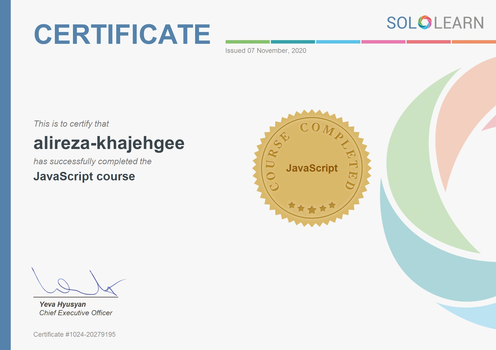

MY RESUME
به نام خدا
علیرضا خواجه گی
 متولد 1376 مجرد و ساکن رشت هستم شماره تماس تلفن همراه :09116707507
من معتقدم اهمیت به کیفیت کار شاید در یک یا حتی چند پروژه منفعت مالی را کاهش دهد اما در دراز مدت مطمئنا" و بدون شک باعث سود دهی بیشتر است
متولد 1376 مجرد و ساکن رشت هستم شماره تماس تلفن همراه :09116707507
من معتقدم اهمیت به کیفیت کار شاید در یک یا حتی چند پروژه منفعت مالی را کاهش دهد اما در دراز مدت مطمئنا" و بدون شک باعث سود دهی بیشتر است
about me IEE , ILI keep your Mouse pointer on it
مدارک تحصیلی
دیپلم تعمیر و نگه داری ماشین های الکتریکی از دبیرستان نور دانش رشت
کاردانی الکترونیک عمومی از دانشگاه آزاد واحد فومن
کارشناسی تکنولوژی الکترونیک از دانشگاه آزاد واحد فومن وشفت
پروانه مهارت فنی نیروی کار صنعت ساختمان لوله کشی گاز درجه یک از سازمان فنی و حرفه ای
سطح intermediate 1 از کانون زبان ایران
دانشجوی رشته نرم افزار کامپیوتر دانشگاه پیام نور شهر ری
سوابق شغلی
تاسیس شرکت خدماتی و فعالیت در زمینه برق از تاریخ 1/4/1398 لغایت اکنون
همکاری با شرکت زرین سو الاداغ از تاریخ 1/4/1397 لغایت 1/4/1398
همکاری با شرکت درین سو از تاریخ 1/1/1396 لغایت 31/3/1397
همکاری در شرکت تاسیساتی چاه سار گیلان به صورت پاره وقت در مدت تحصیل دانشگاه
سوابق علمی
الگوریتم فصل 26
iot در حوزه بلاکچین
دانشجو ممتاز در رشته کارشناسی با معدل 90/18
طراحی برد کنترل جریان برای کارخانه برنج کوبی

عناوین و دوره های کاری
طراحی وپیشنهاد جهت تامین آب نیروگاه سیکل ترکیبی پره سر که منجر به تشویق شرکت چاه سار گیلان از سوی کارفرما گردید .
احیا و بازسازی بیش از دویست حلقه چاه در سطح استان گیلان
مسلط به زبان انگلیسی در سطح تکلم روان
برای اطلاعات بیشتر لطفا وارد سایت شوید
برای دیدن انگیزه نامه لطفا کلیک فرمایید